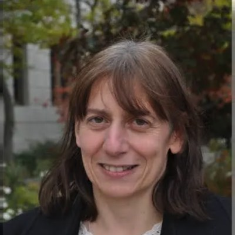

Combatting Subtle Hate Speech in Social Media

Prof. Nathalie Japkowicz
Professor in the CS Department, American University, Washington D.C.
Title: Combatting Subtle Hate Speech in Social Media
Subtlety in hate speech can occur in different facets of language, including the word, sentence, and discourse levels. In this talk, I will consider the word and discourse levels. I will introduce the American University Unmasking Antisemitism (AUUA) App initially designed to discover emerging coded antisemitic terminology on extremist social media but later expanded to work for non-coded antisemitic terminology as well as hatred against four other minority groups. I will also present the results of a human versus machine competition that we ran to evaluate the App’s capability and contrast our results to those of a common LLM. I will then discuss joint work with the University of Ottawa focused on a particular type of discourse-level subtle hate-speech called “soft hate speech”. I will show how we operationalized two complementary theories of reasoning to create a benchmark for soft hate speech. We will see the results of experiments testing different types of transformer-based or LLM-based systems on our new benchmark. These results suggest that even the latest approaches are not equipped to deal with this kind of subtlety.
About the Speaker
Nathalie Japkowicz is a professor in the Computer Science Department at American University, which she chaired from July 2018 to June 2024. Prior to that, she directed the Laboratory for Research on Machine Learning applied to Defense and Security at the University of Ottawa in Canada. She is a Professor and AI/Machine Learning researcher particularly interested in lifelong machine learning, anomaly detection, hate speech monitoring, machine learning evaluation, and the handling of uncharacteristic data including datasets plagued by class imbalances. She trained over 30 graduate students. Her research has been funded by American University’s Signature Research Initiative, DARPA’s L2M program, NSERC, DRDC, Health Canada, and various private companies. Her publications include Evaluating Learning Algorithms: A Classification Perspective at Cambridge University Press (2011), an edited book in the Springer Series on Big Data (2016), and over 150 book chapters, journal articles, and conference or workshop papers. Her recent co-authored book entitled Machine Learning Evaluation: Towards Reliable and Responsible AI at Cambridge University Press appeared in November 2024. She received five best paper awards, including the prestigious European Conference on Machine Learning 2014 Test of Time award, and was awarded the Canadian Artificial Intelligence Association Distinguished Service Award in 2021.